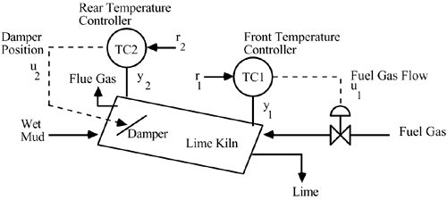

M14.3 Rotary Lime Kiln Temperature Control
Lime kilns are used in the paper industry to convert lime mud to lime. A schematic control instrumentation diagram for a lime kiln is shown in Figure M14-3. Lime mud enters the "back" or the "cold" end, while the lime product exits the "front" or "hot" end. The kiln rotates at approximately one revolution per minute and is inclined so that the mud flows from back to front. The quality of the lime depends on the temperature profile along the kiln. Typical temperatures are 2250°F at the front end and 425°F at the rear end, with nominal damper positions of 50% of range. The inputs are fuel gas flow rate and the damper position, and the outputs are the front and rear temperatures.

|